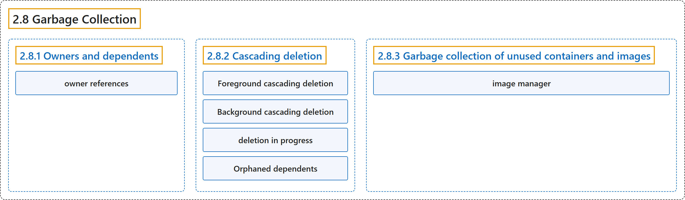

2.8 Garbage Collection
Classification

Glossary
| Term | Definition | 中文翻译 | Source |
|---|---|---|---|
| 2.8 Garbage Collection 垃圾回收 |
"Garbage collection is a collective term for the various mechanisms Kubernetes uses to clean up cluster resources." | 垃圾回收是一个统称，指各种机制，Kubernetes 用它们来清理集群资源。 | The Kubernetes Authors, n.d., "Garbage Collection", para. 1 |
| 2.8.1 Owners and dependents 属主与附属 |
(No definition) | （无定义） | The Kubernetes Authors, n.d., "Owners and dependents" |
| owner references 属主引用 |
"Owner references tell the control plane which objects are dependent on others." | 属主引用告诉控制平面哪些对象依赖于其他对象。 | The Kubernetes Authors, n.d., "Owners and dependents", para. 1 |
| 2.8.2 Cascading deletion 级联删除 |
"When you delete an object, you can control whether Kubernetes deletes the object's dependents automatically, in a process called cascading deletion." | 删除对象时，你可以控制 Kubernetes 是否自动删除该对象的附属对象，这一过程称为级联删除。 | The Kubernetes Authors, n.d., "Cascading deletion", para. 1 |
| Foreground cascading deletion 前台级联删除 |
"In foreground cascading deletion, the owner object you're deleting first enters a deletion in progress state." | 在前台级联删除中，你要删除的属主对象首先进入删除进行中状态。 | The Kubernetes Authors, n.d., "Foreground cascading deletion", para. 1 |
| Background cascading deletion 后台级联删除 |
"In background cascading deletion, the Kubernetes API server deletes the owner object immediately and the garbage collector controller (custom or default) cleans up the dependent objects in the background." | 在后台级联删除中，Kubernetes API 服务器立即删除属主对象，由垃圾回收控制器（自定义或默认的）在后台清理附属对象。 | The Kubernetes Authors, n.d., "Background cascading deletion", para. 1 |
| deletion in progress 删除进行中 |
(context) "In foreground cascading deletion, the owner object you're deleting first enters a deletion in progress state." | （语境）在前台级联删除中，你要删除的属主对象首先进入一种删除进行中状态。 | The Kubernetes Authors, n.d., "Foreground cascading deletion", para. 1 |
| Orphaned dependents 孤立的附属对象 |
"When Kubernetes deletes an owner object, the dependents left behind are called orphan objects." | 当 Kubernetes 删除属主对象时，留下的附属对象称为孤儿对象。 | The Kubernetes Authors, n.d., "Orphaned dependents", para. 1 |
| 2.8.3 Garbage collection of unused containers and images 未使用容器和镜像的垃圾回收 |
"The kubelet performs garbage collection on unused images every five minutes and on unused containers every minute." | kubelet 执行垃圾回收：每五分钟处理未使用的镜像，每分钟处理未使用的容器。 | The Kubernetes Authors, n.d., "Garbage collection of unused containers and images", para. 1 |
| image manager 镜像管理器 |
"Kubernetes manages the lifecycle of all images through its image manager, which is part of the kubelet, with the cooperation of cadvisor." | Kubernetes 通过其镜像管理器管理所有镜像的生命周期，它是 kubelet 的一部分，并与 cadvisor 协作。 | The Kubernetes Authors, n.d., "Container image lifecycle", para. 1 |
References
The Kubernetes Authors. (n.d.). Garbage Collection. Kubernetes Documentation. Retrieved October 31, 2026, from https://kubernetes.io/docs/concepts/architecture/garbage-collection/